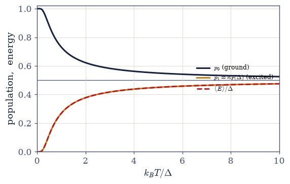
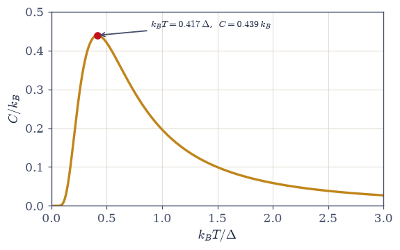
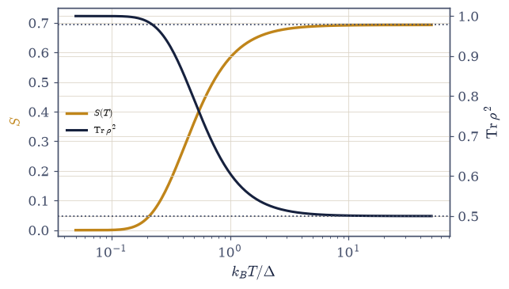
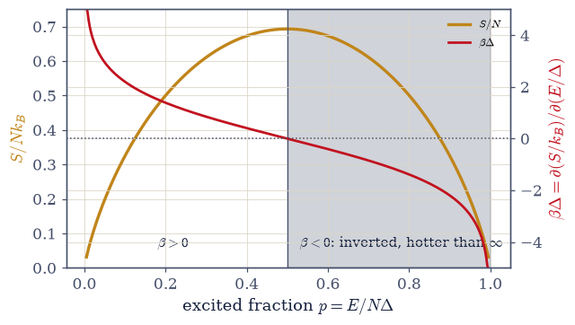

7.4 The Thermal Density Matrix and the Quantum Canonical Ensemble#
Notebook overview#
Movement 0 sharpened the tools; this notebook opens the physics, and it does so by keeping the central promise of the quantum volume. Volume VI ended (§6.26) with the density matrix — the language for quantum states we know only partially — and with a question it deliberately left open: what does \(\rho\) become when a system sits in contact with the world at temperature \(T\)? The answer is the thermal state,
and this notebook earns it rather than declares it. Three roads lead here, and each illuminates something different. The road we take is maximum entropy: among all density matrices with a given mean energy, the thermal one uniquely maximizes the von Neumann entropy of §6.26 — it is the honest state, encoding the one number we know and refusing to pretend we know more. The derivation is four lines of Lagrange multipliers, and then we do something a formula cannot: we let twenty thousand random competitor states try to beat it, each compared against the thermal entropy at its own mean energy, and count the violations. (There are none — and the phrase “at its own mean energy” turns out to be a genuine numerical lesson, not pedantry.) The second road is correspondence: this is exactly Volume V’s canonical ensemble (§5.5), with the Boltzmann weight transplanted from phase space onto a discrete quantum spectrum. The third is entanglement with a bath: trace out an environment, and what remains of the subsystem is thermal — stated here as the physical origin, demonstrated dynamically in §7.22.
The quantum partition function \(Z = \operatorname{Tr}\,e^{-\beta H}\) then generates all of thermodynamics exactly as its classical parent did, and being a trace it is basis-free — a fact we verify three ways rather than assert. The physics of the notebook is carried by the smallest quantum system there is: the two-level system, the qubit of Volume VI, now warm. It delivers an unreasonable haul. Its upper-level population is identically the Fermi–Dirac function — no accident, since a fermionic mode is a two-level system, and the statistics of §7.7 thereby arrive three movements early. Its heat capacity is not a monotone rise but a bump — the Schottky anomaly, the calorimetric fingerprint by which experimentalists detect hidden two-level degrees of freedom and read off their gaps. Its entropy runs from \(0\) to \(\ln 2\), and the zero at \(T \to 0\) is the third law of thermodynamics, delivered here as an intrinsically quantum fact: Volume V’s classical entropy diverges to \(-\infty\) at low temperature, and it is the discreteness of the spectrum that rescues thermodynamics. And because the two-level spectrum is bounded above, its \(S(E)\) curve bends over — \(\beta = \partial S/\partial E\) falls through zero at half filling and goes negative for inverted populations: temperatures below zero that are hotter than infinity, the thermodynamic seed of the laser (§7.15).
Two further seeds close the notebook, both planted for §7.20 and for every cold calculation to come: the identity \(e^{-\beta H} = U(-i\hbar\beta)\) — the thermal weight is time evolution continued to imaginary time — and the log-sum-exp discipline, demonstrated by letting a naive \(Z\) underflow to exactly \(0.0\) and then rescuing it. The harmonic oscillator is deliberately absent: it gets a notebook of its own (§7.5), where a spectrum unbounded above finally has room for the classical limit.
Conventions (this notebook). Units \(k_B = 1\) throughout (temperatures measured in energy units; the \(k_B\)’s are restored in physical statements), and \(\hbar = 1\) where time evolution appears. The standing low-temperature policy, adopted in Exercise 8 and used everywhere after: thermal weights are always computed with the ground energy subtracted, \(e^{-\beta(E_n - E_0)}\) — populations are unchanged and the numerics survive any \(\beta\). For negative-temperature discussions the scale is ordered by \(\beta\), not by \(T\): \(\beta\) decreasing means hotter, and \(\beta < 0\) sits above \(T = \infty\), not below \(T = 0\).
How to read the checks. Each exercise closes with a
validatecall against an independent fact: zero entropy violations across \(2\times10^4\) per-state-constrained competitors; \(Z\) agreeing to eight digits across the eigenvalue sum,scipy.linalg.expm, and a randomly rotated basis; \(-\partial\ln Z/\partial\beta\) meeting \(\operatorname{Tr}(\rho H)\) by central differences; the two-level population matching \(n_F\) at machine precision; the Schottky peak at \(k_BT = 0.417\Delta\); entropy and purity running \(0 \to \ln 2\) and \(1 \to \tfrac12\); the sign change of \(\beta = \partial S/\partial E\) at half filling; and \(e^{-\beta H}\) matching \(U(-i\beta)\) to twelve digits. A ✓ is strong evidence; a ✗ is a prompt to locate the discrepancy.Scope. The canonical ensemble on discrete quantum spectra, with the two-level system as the working example. The oscillator is §7.5 entire; the spin-\(J\) Brillouin treatment is §7.18; the ensemble derivations of \(n_B\) and \(n_F\) are §7.7 (today’s Fermi function is a flagged preview, not a derivation); thermalization dynamics from bath entanglement is §7.22. See Pathria & Beale, Statistical Mechanics (Ch. 5, the density-matrix formulation); Sakurai & Napolitano (§3.4); and Jaynes’s information-theoretic papers for the maximum-entropy viewpoint. Cross-reference §6.26 (the density matrix and von Neumann entropy, now put to work), §6.7 (\(U(t)\), about to be continued), §5.4 (\(\beta = \partial S/\partial E\)), §5.5 (the classical canonical ensemble), §5.7 (the potentials), and forward to §7.5, §7.7, §7.15, §7.18, §7.20, §7.22.
Theory in brief#
Three roads to the thermal state#
What density matrix describes a system at temperature \(T\)? The volume’s derivation of record is maximum entropy. We know one number about the system — its mean energy \(\langle E\rangle = \operatorname{Tr}(\rho H)\) — and honesty demands the state that encodes that number and nothing else: the \(\rho\) that maximizes the von Neumann entropy \(S = -\operatorname{Tr}(\rho\ln\rho)\) of §6.26 subject to \(\operatorname{Tr}\rho = 1\) and the energy constraint. Two Lagrange multipliers later (the derivation is Exercise 1’s opening part),
with \(\beta\) the multiplier conjugate to energy — soon identified with \(1/k_BT\) through the thermodynamic relations below. Two other roads reach the same state. Correspondence: this is Volume V’s canonical ensemble (§5.5) verbatim, the phase-space Boltzmann weight transplanted onto the discrete spectrum. And bath entanglement: a subsystem of a large closed system, entangled with the rest and traced over it (the reduced density matrix of §6.26), is generically left thermal — the physical origin of temperature, stated here and demonstrated dynamically in §7.22. Note what Eq. 580 says structurally: in the energy eigenbasis \(\rho\) is diagonal. A thermal state carries no coherences between energy eigenstates — any such coherence would be information beyond the one number we claimed to know, and maximum entropy forbids exactly that.
The quantum partition function#
The normalization is the volume’s central object,
Being a trace, \(Z\) is basis-independent — computable from the spectrum
(numpy.linalg.eigvalsh), from the matrix exponential (scipy.linalg.expm), or in any rotated
basis whatsoever, and Exercise 2 checks all three to eight digits. The thermal-average formula
needs no simultaneous eigenbasis and no commutation: \(\operatorname{Tr}(\rho A)\) is well-defined
for any \(A\), which is precisely why the trace formulation, not the population list, is the
fundamental one.
Thermodynamics from Z#
Every generating identity of Volume V (§5.5, §5.7) survives verbatim, with the phase-space integral replaced by the spectral sum:
The last identity closes a conceptual loop: for the diagonal thermal \(\rho\), the thermodynamic entropy \((\langle E\rangle - F)/T\) is the von Neumann entropy \(-\operatorname{Tr}(\rho\ln\rho)\), which is the Shannon entropy of the Boltzmann populations — one object wearing three names, and Exercise 3 verifies the identification numerically rather than by decree.
The two-level system, and the Fermi function three movements early#
The smallest quantum system — ground state \(0\), excited state \(\Delta\); the qubit of Volume VI, now warm — carries this notebook’s physics:
The upper-level population is identically the Fermi–Dirac function, and this is no accident: a fermionic mode is a two-level system (empty or occupied, with Pauli forbidding more), so the thermal qubit already contains the fermionic statistics that §7.7 will derive properly from the grand canonical ensemble. We flag the convergence now and complete it there. A spin-\(\tfrac12\) in a field \(B\) is the same system in different clothes: magnetization \(m = \mu\tanh(\beta\mu B)\), with the Curie \(1/T\) tail at high temperature (the general spin-\(J\) Brillouin treatment is §7.18).
The Schottky anomaly#
Differentiating \(\langle E\rangle(T)\) gives the two-level heat capacity,
and it is a bump, not a monotone rise: exponentially small at low \(T\) (the gap freezes the
system out), decaying as \(1/T^2\) at high \(T\) (both levels equally occupied — nothing left to
excite), and maximal in between, at \(k_BT = 0.417\Delta\) with \(C_{\max} = 0.439\,k_B\) (located
numerically with scipy.optimize.minimize_scalar in Exercise 5). This Schottky anomaly is
the experimental fingerprint of any two-level degree of freedom hiding in a material — defects,
tunneling systems, nuclear spins — and the bump’s position reads off the gap. Low-temperature
calorimetry hunts for exactly this shape.
Entropy, purity, and the third law#
The two-level entropy and purity interpolate between two clean limits,
and the first limit is the third law of thermodynamics — delivered as an intrinsically quantum fact. As \(T \to 0\) the thermal state settles into the pure, non-degenerate ground state and \(S \to \ln g_0 = 0\). Classical mechanics cannot do this: Volume V’s classical entropy runs to \(-\infty\) as \(T \to 0\) (the accessible phase-space volume shrinks without bound, and its logarithm follows), a genuine failure of the classical theory. The discreteness of the quantum spectrum — a lowest rung, and a gap above it — is what pins the low-temperature entropy. This is the first of the volume’s “where classical failed” resolutions, and its heat-capacity companion (\(C \to 0\) as \(T \to 0\), visible in the Schottky curve’s frozen side) travels with it.
Negative temperature#
For \(N\) independent two-level systems the entropy per system is the binary entropy of the excited fraction \(p = E/(N\Delta)\),
and because the spectrum is bounded above, \(S(E)\) is non-monotonic: maximal at half filling, where \(\beta\) falls through zero and goes negative for inverted populations (\(p > \tfrac12\)). Three careful statements unpack this. Negative temperatures exist only for spectra bounded above — never for gases or oscillators, whose entropy grows with energy forever. They are hotter than every positive temperature: energy flows spontaneously from a \(\beta < 0\) body to any \(\beta > 0\) body, so the correct ordering of the scale is by \(\beta\) descending, with \(\beta \to -\infty\) (”\(T = -0\)”) the hottest state of all — above infinity, not below zero. And they are not a curiosity: an inverted population is a negative-temperature medium, pumping one is how a laser is loaded, and §7.15 will grow exactly this seed.
Two seeds: imaginary time, and low-temperature numerics#
The thermal weight is not a new operator. It is the time-evolution operator of §6.7, continued:
verified below to twelve digits. Statistical mechanics at inverse temperature \(\beta\) is quantum dynamics for an imaginary duration \(\hbar\beta\) — the single fact on which the path integral of §7.20 is built, where this identity, sliced into Trotter steps, will turn a thermal quantum particle into a classical ring polymer. The second seed is humbler and just as load-bearing: at large \(\beta\) the naive weights \(e^{-\beta E_n}\) underflow (Exercise 8 exhibits a \(Z\) that is exactly \(0.0\)), so the volume’s standing rule is to subtract the ground energy first — populations are unchanged, and the numerics survive arbitrarily deep cold.
Setup#
import matplotlib.pyplot as plt
import numpy as np
from scipy.linalg import expm
from scipy.optimize import brentq, minimize_scalar
from scipy.special import xlogy
from ecp import draw, validate
ACCENT, INK, SOFT = draw.ACCENT, draw.INK, draw.SOFT
RED = "#c1121f"
# Conventions: k_B = 1 and ħ = 1 (temperatures in energy units; k_B's
# restored in physical statements). STANDING LOW-T POLICY (adopted formally in
# Exercise 8): thermal weights are always built from the SHIFTED spectrum E_n − E_ref
# with E_ref chosen so the largest weight is exp(0) = 1 — populations are unchanged
# (the shift cancels between numerator and Z) and no β, positive or negative, can
# underflow the arithmetic. The helpers below implement the policy from birth.
def thermal_populations(E_levels, beta):
"""Boltzmann populations p_n = e^(−β E_n)/Z on a discrete spectrum, shift-protected.
Implements the standing low-temperature policy: the weights are computed as
exp(−β(E_n − E_ref)) with E_ref the level that maximizes −βE_n (the ground state
for β > 0, the TOP state for β < 0), so the largest weight is exactly 1 and the
rest underflow harmlessly to 0 rather than dragging Z down with them. Works for
any sign of β — negative temperatures included (Exercise 7).
Parameters
----------
E_levels : numpy.ndarray
The energy eigenvalues.
beta : float
Inverse temperature (any sign).
Returns
-------
numpy.ndarray
The populations p_n, summing to 1.
"""
w = -beta * np.asarray(E_levels, dtype=float)
w -= w.max() # the shift: largest weight becomes exp(0) = 1
p = np.exp(w)
return p / p.sum()
def thermal_state(H, beta):
"""The thermal density matrix ρ = e^(−βH)/Z by the spectral route (eq-thermal-state).
Diagonalize H with numpy.linalg.eigh, build the shift-protected Boltzmann
populations on the spectrum, and rotate back: ρ = V diag(p) V†. Equivalent to
scipy.linalg.expm(−βH)/Tr — Exercise 8 confirms the two routes agree to machine
precision — but the spectral route survives any β because the shift policy lives
inside :func:`thermal_populations`, whereas a naive expm of a strongly offset
spectrum can underflow wholesale.
Parameters
----------
H : numpy.ndarray
Hermitian Hamiltonian matrix.
beta : float
Inverse temperature (any sign).
Returns
-------
numpy.ndarray
The thermal density matrix (unit trace, Hermitian, positive).
"""
E_levels, V = np.linalg.eigh(H)
p = thermal_populations(E_levels, beta)
return (V * p) @ V.conj().T
def ln_partition_function(H, beta):
"""ln Z(β) with Z = Tr e^(−βH), computed log-safely (eq-partition-function).
Returns the LOGARITHM because Z itself is the quantity that dies: at large β an
offset spectrum underflows Z to 0.0 exactly (Exercise 8 demonstrates it), while
ln Z = −β E_ref + ln Σ exp(−β(E_n − E_ref)) is finite for any β. Every
thermodynamic identity in this notebook consumes ln Z anyway (eq-thermo-from-Z).
Parameters
----------
H : numpy.ndarray
Hermitian Hamiltonian matrix.
beta : float
Inverse temperature (any sign).
Returns
-------
float
ln Z(β).
"""
E_levels = np.linalg.eigvalsh(H)
w = -beta * E_levels
w_max = w.max()
return float(w_max + np.log(np.sum(np.exp(w - w_max))))
def thermal_average(H, A, beta):
"""The thermal average ⟨A⟩ = Tr(ρA) for ANY observable A (eq-partition-function).
Builds ρ by the spectral route and contracts with numpy.trace. No commutation
between A and H is assumed anywhere — the trace formula is basis-free and needs no
simultaneous eigenbasis, which is the whole point of the density-matrix language.
Parameters
----------
H, A : numpy.ndarray
Hermitian Hamiltonian and observable.
beta : float
Inverse temperature.
Returns
-------
float
⟨A⟩ (the real part of the trace; the imaginary part is rounding for Hermitian A).
"""
return float(np.trace(thermal_state(H, beta) @ A).real)
def entropy_purity(rho):
"""The von Neumann entropy S = −Tr(ρ ln ρ) and purity Tr(ρ^2) of a density matrix.
Diagonalizes ρ with numpy.linalg.eigvalsh and evaluates S = −Σ λ ln λ through
scipy.special.xlogy, which returns exactly 0 at λ = 0 instead of the nan that
0·log(0) would produce — thermal populations at low temperature are routinely
denormal-or-zero, and the entropy must not care. Tiny negative eigenvalues from
rounding are clipped.
Parameters
----------
rho : numpy.ndarray
A density matrix (Hermitian, unit trace, positive).
Returns
-------
tuple of float
(S, purity).
"""
lam = np.clip(np.linalg.eigvalsh(rho), 0.0, None)
S = float(-np.sum(xlogy(lam, lam)))
return S, float(np.sum(lam**2))
def beta_from_energy(E_levels, E_mean, beta_bracket=(-60.0, 60.0)):
"""Invert ⟨E⟩(β) = E_mean on a discrete spectrum with scipy.optimize.brentq.
⟨E⟩(β) is strictly decreasing in β (its derivative is −Var(E) < 0), running from
the top of the spectrum at β → −∞ to the bottom at β → +∞, so a bracketing root
find is guaranteed a unique solution whenever E_mean lies strictly inside the
spectrum's range — which every normalized population vector's mean energy does.
The wide default bracket covers populations concentrated to one part in e^(±60).
Parameters
----------
E_levels : numpy.ndarray
The energy eigenvalues.
E_mean : float
The target mean energy, strictly between min and max of E_levels.
beta_bracket : tuple of float, optional
The brentq bracket (default (−60, 60)).
Returns
-------
float
The unique β with ⟨E⟩(β) = E_mean.
"""
E_arr = np.asarray(E_levels, dtype=float)
def mean_energy_mismatch(beta):
return float(thermal_populations(E_arr, beta) @ E_arr) - E_mean
return brentq(mean_energy_mismatch, *beta_bracket, xtol=1e-12)
Exercise 1 — The thermal state by maximum entropy#
Among all states with the right average energy, one assumes nothing else — we derive it, then let twenty thousand competitors try to beat it. Cite Eq. 580.
Derive \(\rho = e^{-\beta H}/Z\) by maximizing \(S = -\operatorname{Tr}(\rho\ln\rho)\) subject to \(\operatorname{Tr}\rho = 1\) and \(\operatorname{Tr}(\rho H) = \langle E\rangle\) (Lagrange multipliers, working in the energy basis where the problem is over populations).
For the four-level spectrum \(E = (0,\ 0.7,\ 1.5,\ 2.1)\), implement
beta_from_energywithscipy.optimize.brentqand compute the thermal populations and entropy at \(\langle E\rangle = 0.9\).Sample \(2\times10^4\) random population vectors with
numpy.random.default_rng().dirichlet, and for each compare its Shannon entropy against the thermal entropy at its own mean energy (abrentqinversion per sample); confirm zero violations of \(S \le S_{\text{th}}\).Explain (prose) why the comparison must be per-state — an acceptance window around one target energy admits states whose legitimately higher entropy belongs to a different \(\langle E\rangle\) — and state the conclusion: the thermal state is the least-informative state consistent with the known mean energy.
four-level spectrum [0. 0.7 1.5 2.1], target ⟨E⟩ = 0.9
β(⟨E⟩) by brentq: 0.278058
thermal populations: [0.329 0.2708 0.2168 0.1835]
thermal entropy S_th(⟨E⟩ = 0.9) = 1.362044
20000 dirichlet competitors, each vs the thermal state at ITS OWN ⟨E⟩:
violations of S ≤ S_th: 0
smallest margin S_th − S: 9.58e-06 (largest: 1.224)
Validation 1#
✓ the thermal state maximizes entropy at fixed mean energy (per-state comparison, 2e4 samples) [violations 0, min margin 9.6e-06]
✓ beta_from_energy inverts ⟨E⟩(β) exactly: the brentq root reproduces the target energy [got 0.9 vs expected 0.9 (rtol=1e-10)]
True
Exercise 2 — The partition function is a trace#
\(Z\)’s basis-freedom, exhibited three ways on a Hamiltonian with no special structure. Cite Eq. 581.
For a random \(5\times5\) Hermitian \(H\), compute \(Z(\beta)\) as \(\sum_n e^{-\beta E_n}\) from
numpy.linalg.eigvalsh.Recompute as \(\operatorname{Tr}(e^{-\beta H})\) via
scipy.linalg.expmandnumpy.trace.Recompute the trace in a randomly rotated orthonormal basis (
numpy.linalg.qrof a random matrix) and confirm all three agree to at least eight digits.Compute a thermal average \(\langle A\rangle = \operatorname{Tr}(\rho A)\) for an observable \(A\) that does not commute with \(H\), and note (prose) that the formula needs no simultaneous eigenbasis — the whole point of the trace.
spectrum of H: [-2.8613 -1.1674 -0.3806 1.554 2.0665]
Z by eigenvalue sum: 14.245549533280
Z by Tr expm(−βH): 14.245549533280
Z in a random QR basis: 14.245549533280
‖[H, A]‖ = 7.262 (decisively non-commuting)
⟨A⟩ = Tr(ρA) = 1.4058521515
Validation 2#
✓ Z = Tr e^(−βH) is basis-independent: eigenvalue sum, expm trace, and a random QR basis agree [max|Δ| = 5.86198e-14 (rtol=1e-08, atol=1e-09)]
✓ the log-safe ln Z helper reproduces the direct sum (its raison d'être arrives in Exercise 8) [got 14.2455 vs expected 14.2455 (rtol=1e-12)]
True
Exercise 3 — Thermodynamics from Z#
The generating identities of Volume V, verified on a quantum spectrum — and the identification of three entropies as one object. Cite Eq. 582.
Verify \(\langle E\rangle = -\partial\ln Z/\partial\beta\) against \(\operatorname{Tr}(\rho H)\) by central differences (step \(10^{-6}\)), to at least eight digits.
Compute \(F = -k_BT\ln Z\) and \(C = \partial\langle E\rangle/\partial T\) (central differences again) across a temperature range.
Show the thermodynamic entropy \((\langle E\rangle - F)/T\) equals the von Neumann entropy \(-\operatorname{Tr}(\rho\ln\rho)\) of the thermal state — the same object, wearing its information-theoretic name.
Note (prose) the inheritance: every Volume V identity (§5.5/§5.7) survives verbatim, with the sum over phase space replaced by the sum over the spectrum.
−∂lnZ/∂β (central diff) = -2.1669708765
Tr(ρH) = -2.1669708764
sweep T = 0.2..4.0: C > 0 everywhere: True
F monotonically decreasing: True
at T = 1.25: S_thermo = (⟨E⟩−F)/T = 0.9228678434
S_vonNeumann = −Tr(ρ ln ρ) = 0.9228678434
Validation 3#
✓ ⟨E⟩ = −∂lnZ/∂β = Tr(ρH): the generating identity, by central differences [got -2.16697 vs expected -2.16697 (rtol=1e-07)]
✓ the thermodynamic entropy (⟨E⟩−F)/T IS the von Neumann entropy of the thermal state [got 0.922868 vs expected 0.922868 (rtol=1e-08)]
✓ C > 0 (energy fluctuations are a variance) and F decreases with T (slope −S ≤ 0)
True
Exercise 4 — The warm qubit, and the Fermi function three movements early#
One two-level system, an unreasonable amount of physics. Cite Eq. 583.
Write \(Z = 1 + e^{-\beta\Delta}\) and derive the upper-level population \(p_1(T)\) and mean energy \(\langle E\rangle(T)\).
Confirm numerically that \(p_1(T) = 1/(e^{\beta\Delta}+1)\) is identically the Fermi–Dirac function \(n_F(\Delta)\), and explain why (a fermionic mode is a two-level system: empty or occupied) — the statistics of §7.7, arriving early.
Compute the spin-\(\tfrac12\) magnetization \(m = \tanh(\beta\mu B)\) and verify the Curie \(1/T\) tail at high temperature (\(m \approx \mu B/k_BT\) to \(1\%\) at \(k_BT = 10\,\mu B\)).
Plot populations and \(\langle E\rangle\) vs \(T\); note the saturation \(\langle E\rangle \to \Delta/2\) (both levels equal) and defer the classical-limit discussion to §7.5, where a spectrum unbounded above makes equipartition possible. (Prose part.)
max |p_1(T) − n_F(Δ)| over the sweep: 1.11e-16 (identical up to rounding)
m(k_BT = 10μB) = 0.099668 vs Curie μB/k_BT = 0.100000
relative deviation: 0.33% (tanh's −x^3/3 term)

Fig. 540 The warm qubit. Populations of the ground (dark) and excited (amber) levels of a two-level system with gap \(\Delta\), and the mean energy \(\langle E\rangle/\Delta\) (red, dashed): frozen into the pure ground state at \(k_BT \ll \Delta\), saturating toward equal occupation and \(\langle E\rangle = \Delta/2\) at \(k_BT \gg \Delta\). The excited-state curve \(p_1 = 1/(e^{\Delta/k_BT}+1)\) is identically the Fermi–Dirac function \(n_F(\Delta)\) — a fermionic mode is a two-level system (empty or occupied), so the statistics of §7.7 appear here three movements early. The saturation is the signature of a bounded spectrum: with no states above \(\Delta\), equipartition is impossible, and the classical limit must wait for the oscillator’s unbounded ladder (§7.5).#
Validation 4#
✓ the two-level upper population is the Fermi function n_F(Δ), identically [max|Δ| = 1.11022e-16 (rtol=1e-12, atol=1e-09)]
✓ the Curie 1/T tail: m ≈ μB/k_BT to 1% at k_BT = 10μB [got 0.099668 vs expected 0.1 (rtol=0.01)]
True
Exercise 5 — The Schottky anomaly#
A bump in the heat capacity — the calorimetric fingerprint of a gap. Cite Eq. 584.
Derive \(C(T) = k_B\,x^2 e^x/(e^x+1)^2\) with \(x = \Delta/k_BT\) from \(\langle E\rangle(T)\).
Locate the maximum with
scipy.optimize.minimize_scalar: \(x^* = 2.399\), i.e. \(k_BT = 0.417\Delta\), with \(C_{\max} = 0.439\,k_B\).Explain the shape (prose): frozen out below the gap, exhausted above it — a two-level system can only absorb heat in the window where the upper level is filling.
State the experimental use: a Schottky bump in low-temperature calorimetry reveals hidden two-level degrees of freedom (defects, nuclear spins, tunneling systems), and its position measures \(\Delta\).
Schottky peak: x* = Δ/k_BT = 2.3994
i.e. k_BT = 0.4168 Δ, C_max = 0.4392 k_B
calorimetric reading: T_peak → Δ (position), bump height → count of two-level systems

Fig. 541 The Schottky anomaly. The two-level heat capacity \(C(T) = k_B x^2 e^x/(e^x+1)^2\) with \(x = \Delta/k_BT\) is a bump, not a monotone rise: exponentially frozen below the gap, decaying as \(1/T^2\) once both levels are equally occupied, and maximal at \(k_BT = 0.417\Delta\) (marked) where \(C_{\max} = 0.439\,k_B\): a peak located numerically with minimize_scalar, since its defining equation is transcendental. In low-temperature calorimetry this shape, riding on the smooth lattice and electron backgrounds, is the fingerprint of hidden two-level degrees of freedom (defects, nuclear spins, tunneling systems), with the peak position reading off the gap and the height counting the systems. The freeze-out side is also the third law’s heat-capacity face: \(C \to 0\) as \(T \to 0\) (Exercise 6).#
Validation 5#
✓ the Schottky anomaly peaks at x* = 2.399 (k_BT = 0.417Δ) with C_max = 0.439 k_B [max|Δ| = 0.000355867 (rtol=0.001, atol=1e-09)]
✓ both tails vanish: frozen out below the gap, exhausted above it [C(T=0.02Δ) = 4.8e-19, C(T=50Δ) = 1.0e-04]
True
Exercise 6 — Entropy, purity, and the third law#
Where classical thermodynamics failed at low temperature, and how discreteness rescues it. Cite Eq. 585.
Compute \(S(T)\) and purity \(\operatorname{Tr}(\rho^2)\) for the two-level system across \(T = 0.05\) to \(50\) (in units of \(\Delta/k_B\)), with the
entropy_purityhelper on the thermal state, confirming \(S: 0 \to \ln 2\) and purity: \(1 \to \tfrac12\).Show the \(T\to0\) state is the pure ground state (the thermal density matrix’s limit), so \(S \to 0\): the third law.
Contrast (prose plus one formula) with the classical result: Volume V’s classical entropy diverges to \(-\infty\) as \(T \to 0\) (a genuine failure), while the quantum spectrum’s discreteness pins \(S(0) = \ln g_0\) to the ground degeneracy.
Record this as the volume’s first “where classical failed” resolution, with the heat-capacity companion (\(C \to 0\) as \(T \to 0\), visible in the Schottky curve) noted.
S(T = 0.05) = 4.33e-08 S(T = 50) = 0.693097 (ln 2 = 0.693147)
purity(0.05) = 0.9999999959 purity(50) = 0.500050
at T = 0.01: S = 3.72e-42, purity = 1.000000000000 (the pure ground state)

Fig. 542 The third law, as a quantum fact. Von Neumann entropy \(S(T)\) (amber, left axis) and purity \(\operatorname{Tr}\rho^2\) (dark, right axis) of the thermal two-level state across three decades of temperature: at \(k_BT \ll \Delta\) the state exits the mixed states entirely (purity \(\to 1\), \(S \to 0\): the pure ground state), while at \(k_BT \gg \Delta\) it saturates at maximal mixedness, \(S \to \ln 2\) and purity \(\to \tfrac12\). The vanishing of \(S\) at \(T \to 0\) is the third law of thermodynamics, and it is intrinsically quantum: the classical entropy \(S_{cl} \sim k_B\ln T\) of Volume V diverges to \(-\infty\) instead, because a continuous phase space has no lowest rung. Discreteness, a ground state and a gap above it, is what pins the cold end of thermodynamics.#
Validation 6#
✓ S(T) runs from 0 (third law) to ln 2 (maximal mixedness) [S(0.05) = 4.3e-08, S(50) = 0.69310]
✓ purity runs from 1 (the pure ground state) to 1/2 (the maximally mixed qubit) [purity(0.05) = 1.000000, purity(50) = 0.50005]
True
Exercise 7 — Negative temperature: hotter than infinity#
A bounded spectrum lets \(\beta\) change sign — and the thermodynamics is impeccable. Cite Eq. 586.
For \(N\) independent two-level systems, write \(S(E)/N\) as the binary entropy of \(p = E/(N\Delta)\) and plot it: non-monotonic, maximal at half filling.
Compute \(\beta = \partial S/\partial E\) with
numpy.gradienton the curve and confirm the sign change at \(E = N\Delta/2\), with the antisymmetric values at \(p = 0.25\) and \(0.75\) matching the closed form \(\beta\Delta = \ln\big((1-p)/p\big) = \pm\ln 3\).Argue (prose, carefully): \(\beta < 0\) states are hotter than all \(\beta > 0\) states — energy flows spontaneously from them to any positive-temperature body (order the scale by \(\beta\), not \(T\)) — and they exist only for spectra bounded above, never for a gas or an oscillator.
Connect forward: an inverted population is a negative-temperature medium, and pumping one is how a laser is loaded — the thermodynamic seed §7.15 will grow.
β at p = 0.2506: +1.09522 (closed form +1.09521; ln 3 = +1.09861)
β at p = 0.7494: -1.09522 (closed form -1.09521)
β > 0 on the left half, β < 0 on the right half: True

Fig. 543 Hotter than infinity. The entropy per system \(S/N\) of \(N\) two-level systems against the excited fraction \(p = E/N\Delta\) is non-monotonic (the spectrum is bounded above, so \(S\) must return to zero at full inversion), and the inverse temperature \(\beta = \partial S/\partial E\) (red, right axis) falls through zero at half filling and goes negative beyond: \(\beta\Delta = \ln\big((1-p)/p\big) = \pm\ln 3\) at \(p = 0.25/0.75\), read off the curve by numpy.gradient. On the shaded right half the system donates energy to any positive-temperature body: negative temperatures are hotter than \(T = \infty\) (order the scale by \(\beta\), never by \(T\)), they exist only for spectra bounded above, and an inverted, pumped population at \(\beta < 0\) is exactly the medium a laser runs on (§7.15).#
Validation 7#
✓ β = ∂S/∂E changes sign at half filling: inverted populations are negative-temperature states
✓ the gradient matches the closed form βΔ = ln((1−p)/p) (≈ ±ln 3 at p = 0.25/0.75) [max|Δ| = 1.45066e-05 (rtol=0.001, atol=1e-09)]
True
Exercise 8 — A general Hamiltonian, and the two standing disciplines#
The machinery on an arbitrary spectrum — plus the two numerical rules the volume will live by, one of them the seed of the path integral. Cite Eq. 581, Eq. 587.
For a five-level Hamiltonian with an offset spectrum, build \(\rho(\beta)\) both by the spectral route (the
thermal_statehelper) and byscipy.linalg.expm, confirm the routes agree to machine precision, and compute \(\langle A\rangle\) for a non-commuting observable.Demonstrate the low-temperature catastrophe: at \(\beta = 800\), show the naive \(Z = \sum e^{-\beta E_n}\) underflows to exactly \(0.0\), then repeat with the ground energy subtracted and confirm the populations are correct and stable — adopting \(E_0\)-subtraction as standing policy.
Verify \(e^{-\beta H} = U(t = -i\hbar\beta)\) by evaluating
scipy.linalg.expm\((-iH\cdot(-i\beta))\) againstscipy.linalg.expm\((-\beta H)\) (agreement at the \(10^{-12}\) level): the thermal weight is imaginary-time evolution.State (prose) what that identity will become: sliced into \(P\) steps it is the Trotter decomposition, and the thermal quantum particle becomes a classical ring polymer — the path integral of §7.20, planted.
spectral vs expm route: max|Δρ| = 2.55e-15
⟨A⟩ for a non-commuting A: 0.2673411963 (‖[H,A]‖ = 4.32)
β = 800.0: naive weights [0. 0. 0. 0. 0.] → Z_naive = 0.0
shifted populations: [1.000e+000 1.061e-139 0.000e+000 0.000e+000 0.000e+000] (sum = 1.0)
the ground state holds everything, as physics demands — the naive route returned nothing at all
max|U(−iβ) − e^(−βH)| = 4.39e-18
Validation 8#
✓ the spectral and expm routes build the same thermal state on a full (rotated) Hamiltonian [max|Δρ| = 2.6e-15]
✓ the log-sum-exp discipline: the naive Z underflows to exactly 0.0; the shifted populations are exact [Z_naive = 0.0, shifted p_0 = 1.0]
✓ e^(−βH) = U(t = −iβ): the thermal weight is evolution in imaginary time — the path-integral seed [max|Δ| = 4.39102e-18 (rtol=1e-06, atol=1e-10)]
True
Exercise 9 — The honest state#
The thermal density matrix earned its form three times over in this notebook — as the state that assumes nothing beyond one measured number, as the quantum rendering of Volume V’s Boltzmann weight, and as what a bath leaves behind when we stop tracking it. The first road is the one worth carrying: there is a quiet philosophical satisfaction in the maximum-entropy route, because the Boltzmann factor is revealed as not an assumption about nature so much as a confession of what we know (one number) and a refusal to pretend we know more. Twenty thousand random states tried to be less committal at the same energy; none managed it, and the smallest margin of defeat was still positive. Even the numerical lesson inside that verification (compare each state to the ceiling at its own energy, or manufacture false violations) is the same idea in miniature: constraints are to be honored exactly, not approximately.
A single warm qubit then carried the whole notebook. The Fermi function appeared uninvited, three movements early, because a fermionic mode simply is a two-level system. The heat capacity grew a bump that experimentalists use as a fingerprint for hidden two-level defects, its position a ruler for the gap. The entropy obeyed a third law that classical mechanics could never deliver — Volume V’s entropy dives to \(-\infty\) where the quantum answer settles serenely to zero — and the bounded spectrum opened a door marked “below zero” that turns out to lead above infinity, where pumped, inverted, laser-ready media live. Two seeds are in the ground for later notebooks: the thermal weight is time evolution run for an imaginary duration (§7.20 will slice it into a ring polymer), and cold numerics demand the shifted spectrum (a rule the volume now follows as policy). The next notebook (§7.5) puts the first unbounded spectrum on the scale: Planck’s oscillator, where freezing out is born, the Einstein solid explains a century-old anomaly, and the classical limit finally has room to appear.
Notebook summary#
Movement I opens with the volume’s central object, earned three ways and put to work on the smallest quantum system there is.
The thermal state Eq. 580: \(\rho = e^{-\beta H}/Z\), derived by maximizing von Neumann entropy at fixed mean energy — and defended against \(2\times10^4\) Dirichlet competitors with zero violations, each judged at its own mean energy (the per-state constraint being itself a numerical lesson). Diagonal in the energy basis: a thermal state holds no coherences, because coherence would be unclaimed knowledge.
The partition function is a trace Eq. 581: eigenvalue sum,
scipy.linalg.expm, and a randomly rotated basis agree to eight digits, and \(\langle A\rangle = \operatorname{Tr}(\rho A)\) needs no commutation with \(H\).Thermodynamics from \(Z\) Eq. 582: Volume V’s identities survive verbatim on the spectrum; \(-\partial\ln Z/\partial\beta\) meets \(\operatorname{Tr}(\rho H)\) by central differences, and the thermodynamic entropy is the von Neumann entropy.
The warm qubit Eq. 583: \(p_1 = n_F(\Delta)\) identically — the Fermi function three movements early, because a fermionic mode is a two-level system — plus the Curie \(1/T\) tail of the spin-\(\tfrac12\) magnetization.
The Schottky anomaly Eq. 584: a bump at \(k_BT = 0.417\Delta\), \(C_{\max} = 0.439\,k_B\), frozen below the gap and exhausted above it — calorimetry’s fingerprint for hidden two-level degrees of freedom.
The third law is quantum Eq. 585: \(S: 0 \to \ln2\) and purity \(1 \to \tfrac12\); the \(T \to 0\) state is the pure ground state, where the classical entropy diverges to \(-\infty\) — discreteness rescues thermodynamics.
Negative temperature Eq. 586: the bounded spectrum bends \(S(E)\) over; \(\beta = \partial S/\partial E\) crosses zero at half filling (\(\pm\ln3\) at \(p = 0.25/0.75\)); \(\beta < 0\) is hotter than every positive temperature, and an inverted population is the laser’s medium (§7.15).
Two seeds Eq. 587: \(e^{-\beta H} = U(-i\hbar\beta)\) to twelve digits — the path integral’s foundation (§7.20) — and the log-sum-exp discipline, adopted after watching a naive \(Z\) underflow to exactly \(0.0\).
The density matrix has its temperature; the oscillator is next.
Outlook#
The quantum oscillator at temperature (§7.5). Planck’s occupation, the Einstein solid, freezing out, and the classical limit recovered on the first unbounded spectrum.
Molecules (§7.6). The heat-capacity staircase and ortho/para hydrogen.
The payoffs downstream. The Fermi function’s proper grand-canonical derivation (§7.7); the laser’s inverted medium (§7.15); Brillouin paramagnetism (§7.18); the path integral from imaginary time (§7.20); thermalization from bath entanglement (§7.22).
The grand canonical ensemble, quantized — the machinery of §5.9 pointed at quantum modes (§7.7).
Cross-reference §6.26 (the density matrix and its entropy, now put to work), §6.7 (\(U(t)\), continued to imaginary time), §5.4 (\(\beta = \partial S/\partial E\)), §5.5/§5.7 (the classical canonical machinery, inherited verbatim).